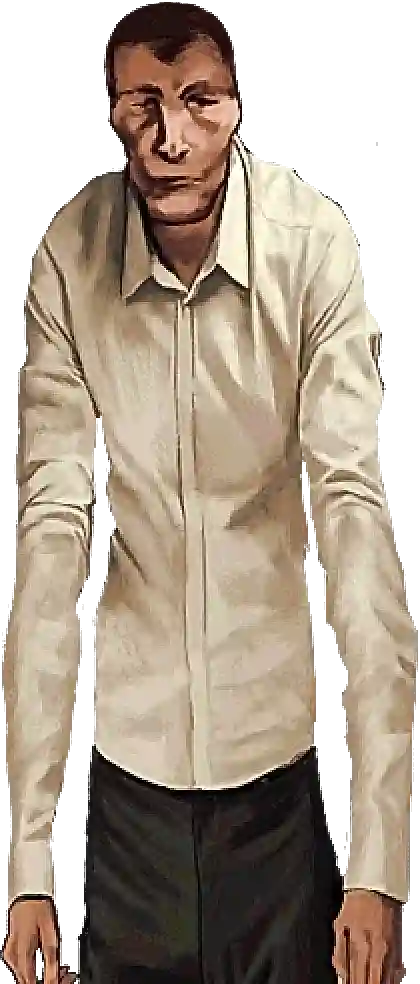
El Hombre Alto
Siempre HumanoUn extraño alto y reservado. A pesar de su apariencia inquietante, es completamente humano y puede ser un aliado valioso.
¿Quién es humano? ¿Quién es un impostor?
En este mundo devastado por el apocalipsis solar, no todos los que tocan a tu puerta son lo que parecen. Los Visitantes son criaturas que emergen del subsuelo, capaces de imitar perfectamente la apariencia humana. Algunos personajes siempre son humanos, otros siempre son Visitantes, y muchos cambian de identidad en cada partida.
Estos personajes nunca son Visitantes. Puedes confiar en ellos.

Un extraño alto y reservado. A pesar de su apariencia inquietante, es completamente humano y puede ser un aliado valioso.
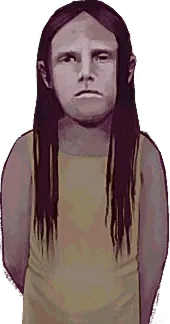
La hija de tu vecino. Visita en las noches 1 y 4. Es completamente confiable y mantiene una conexión cercana con el protagonista.
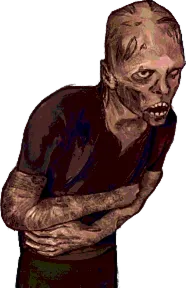
Un superviviente marcado por el sol. Sus quemaduras son reales, no una imitación de Visitante.
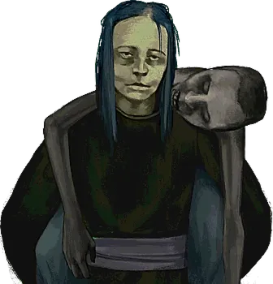
Carga el cuerpo de su esposo fallecido. Su dolor y sus ojos rojos son resultado del llanto, no señales de Visitante.
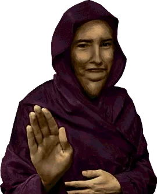
Adoradores del sol que visitan en la noche 8. A pesar de sus creencias extrañas, son humanos genuinos. Cruciales para ciertos finales.
Estos personajes siempre son amenazas. Identifícalos y elimínalos.
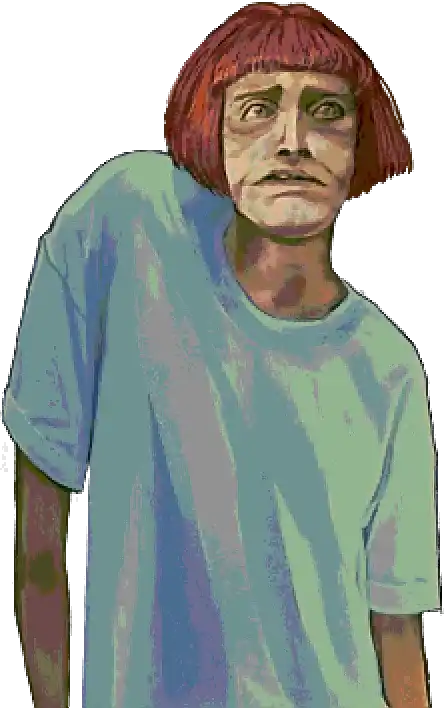
Parece asustada y confundida. Actúa como si no supiera que es un Visitante. No atacará a otros humanos, pero sigue siendo una amenaza.
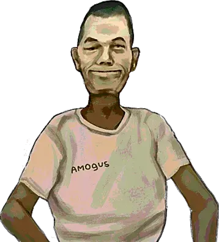
Viste una camiseta de Among Us. Un guiño obvio al tema del juego. Es abiertamente malicioso y peligroso.
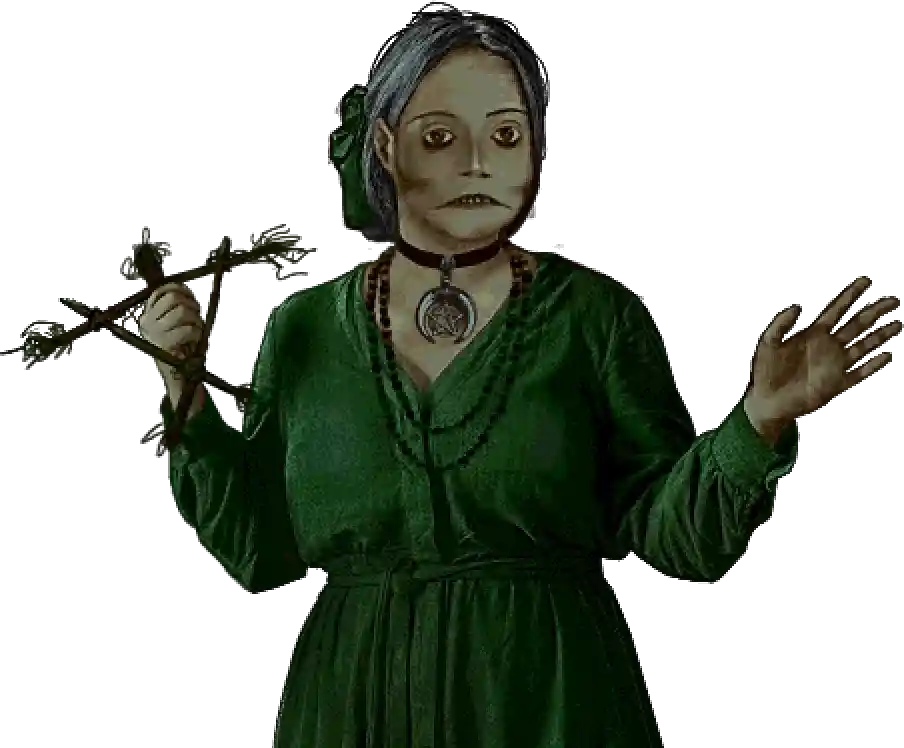
Ofrece leer tu futuro. Sus "predicciones" son solo manipulación. Siempre es una amenaza.
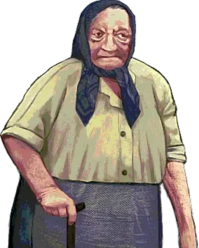
Uno de los pocos Visitantes garantizados. Examina sus manos cuidadosamente: tiene seis dedos.

Se presenta como bailarina y ofrece bailar. Tiene uñas rotas y manos arañadas. Aparece en la noche 4 y desbloquea el sótano.
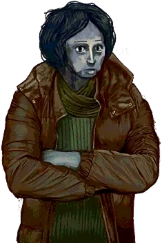
Dientes perfectos y pupilas muy estrechas. Siempre es un Visitante en cada partida.
Estos personajes pueden ser humanos o Visitantes. Debes investigarlos cada vez.
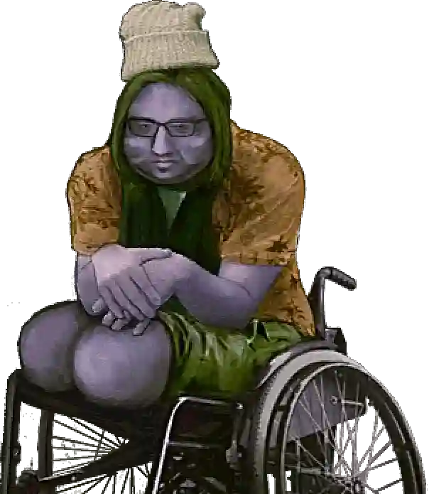
Su identidad cambia en cada partida. Presta atención al número de dedos en sus manos.
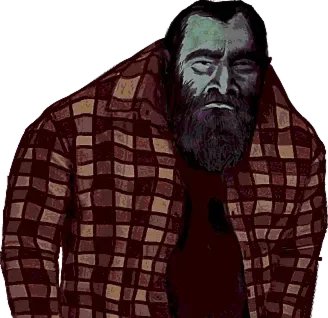
Tiene una personalidad casual y amigable. No te dejes engañar por su actitud relajada.
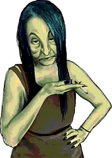
Dos hermanas que siempre viajan juntas. Su historia puede ser convincente o una Visitante puede estar entre ellas.
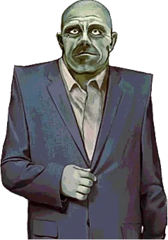
Solo Los mas fuertes sobreviven...
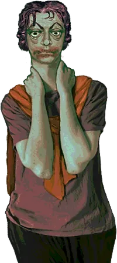
Que raro no se entiende lo que dice... Espera es Italiano?
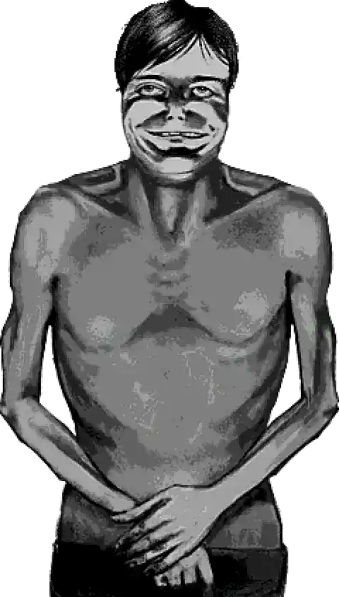
Un hombre alto, sin camisa, extremadamente pálido. Basado en el Juez Holden de "Blood Meridian". Visita en las noches 3, 5, 9 y 11. Pregunta: "¿Estás solo?". Si lo estás (o mientes), te matará instantáneamente. DEBES tener al menos un huésped en la noche 4 para sobrevivir.
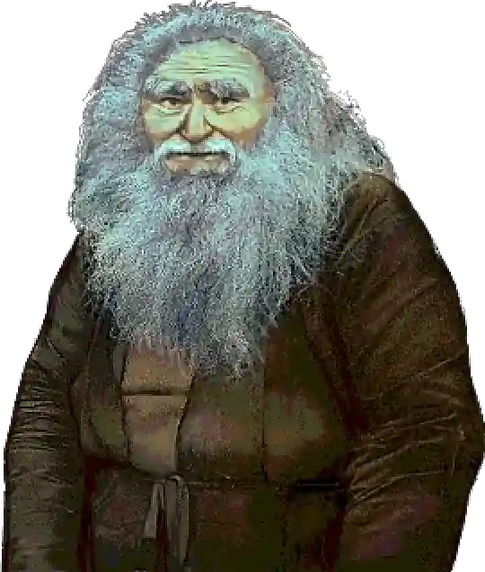
Habla sobre el Festival de los Hongos. Visita alrededor del día 6. Esencial para desbloquear el final "Mushroom" o "Shroom or Doom".
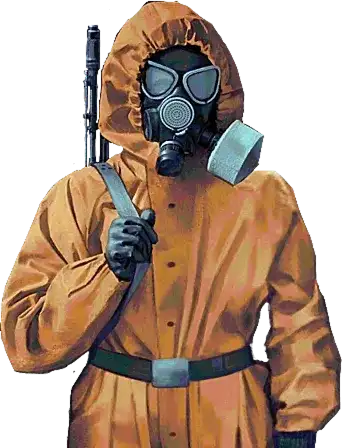
Visten trajes hazmat amarillos y máscaras de gas. Visitan en las noches 4, 5, 8 y 10 para llevarse huéspedes. ¿Protección o control? Seguir sus órdenes lleva a un final específico.
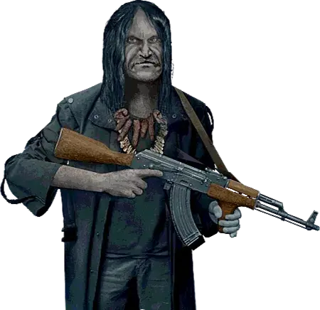
Te sospecha de ser un Visitante. Si muestras señales sospechosas (uñas sucias por cavar, dientes perfectos), puede matarte. Crucial para ciertos finales.
Ninguna señal es definitiva por sí sola. Debes buscar múltiples indicadores y confiar en tu instinto.